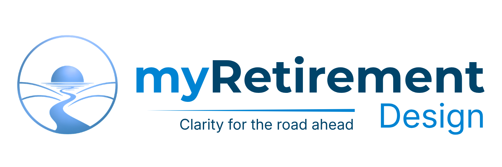

Most retirement planning starts with what to invest in. We start with a different question: how do you actually want your retirement to feel and function? Take the Design Profile to discover the retirement design philosophy that fits you.
Begin the Design ProfileThe Design Profile is built on The Roles-Based Method, a retirement planning methodology developed at Jantz Wealth Solutions. Most retirement advice treats financial products as interchangeable wrappers around an asset allocation. We treat them as specialized tools, each with a specific job in your retirement. This assessment identifies which of four design Profiles fits how you want your retirement to feel, and shows you how your personalized Retirement Stack should be structured around it.